新方案室內設計師專用
業主說不出想要什麼？
讓他用「點」的。
在平板上點風格、勾喜歡的元素，需求自動整理好傳到你的 LINE。
以前畫完 3D 才發現方向不對，一改再改
現在第一次見面，業主就自己點出方向
示範案例為虛構；風格圖為概念提案，非施工圖
一個人，做出一個團隊的產能。我把 AI 做成每天真的有人在用的工具——LINE 上的智慧助理、團隊內部系統、自動化報表，到行銷用的圖片與短影音，從需求、開發到上線一手包辦。
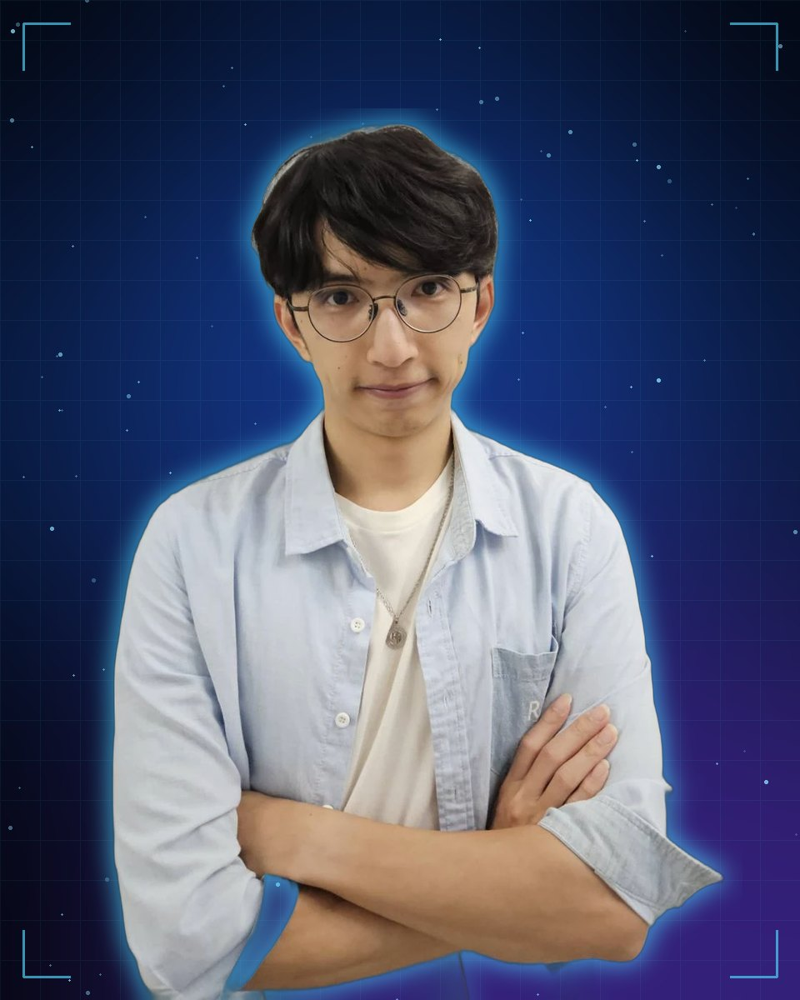
Problems I solve
多數中小企業不缺 AI 工具，缺的是「有人幫你把它接進每天的工作流程」。以下是我最常幫忙解決的四種狀況：
客人、員工的訊息回不完，事情常常忘記
LINE 智慧助理在大家本來就用的 LINE 裡，自動提醒、自動回覆、自動記錄。
資料散在群組、Excel 和每個人的手機裡
客製內部平台登入、行事曆、客戶管理、教育訓練集中一處，手機就能用。
每天都在查後台、貼報表、追名單
自動化排程程式每天自動抓資料、整理重點，直接推播到 LINE。
行銷素材靠外包，又慢又貴
AI 圖片與短影音商品圖、海報、9:16 短影音，可快速改版、大量產出。
Featured cases
給室內設計師的最新方案，加上已經上線、每天有人在用的兩個產品。
讓他用「點」的。
在平板上點風格、勾喜歡的元素，需求自動整理好傳到你的 LINE。
示範案例為虛構；風格圖為概念提案，非施工圖
說一句話，重要的事幫你記。
不用下載新 App，打開 LINE 就有一位 24 小時的私人秘書。
同樣的技術可以用在：診所回診提醒、美業／教室預約通知、業務個人助理、店家會員自動回覆。
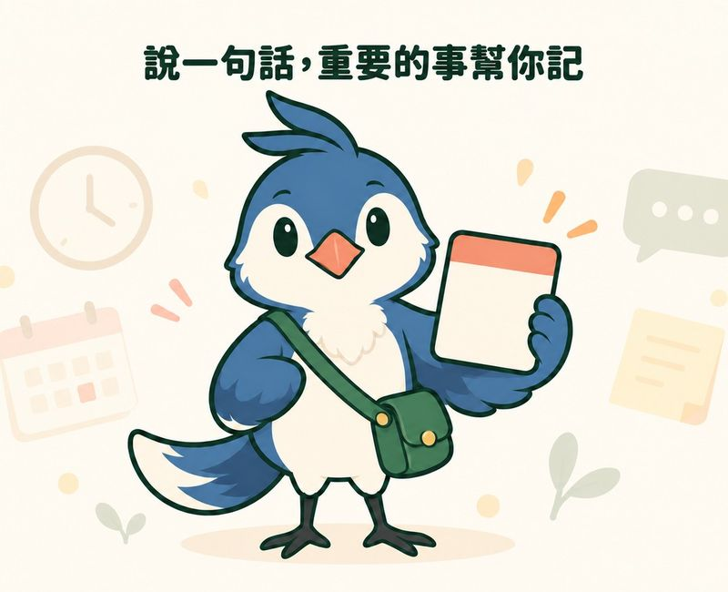
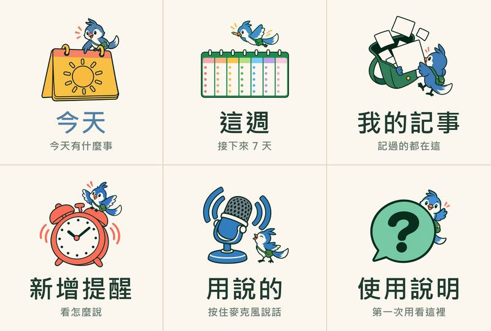
品牌吉祥物與 LINE 圖文選單皆為本案自行設計產出
給 10–30 人業務團隊的「線上辦公室」。
用 LINE 一鍵登入，訓練、客戶、行程、交流全在手機上完成。
設計重點：客戶資料只有本人看得到（連管理者都看不到明細）；不做排行榜，避免熟人團隊互相比較——系統要讓人「想用」，而不只是「被要求用」。
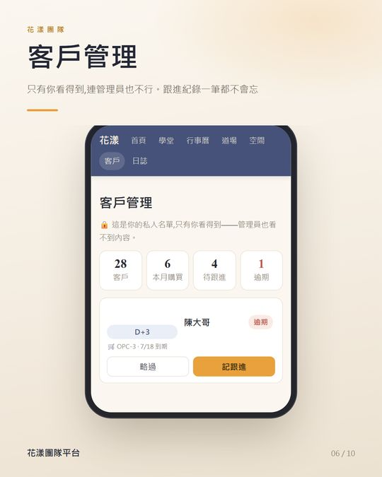
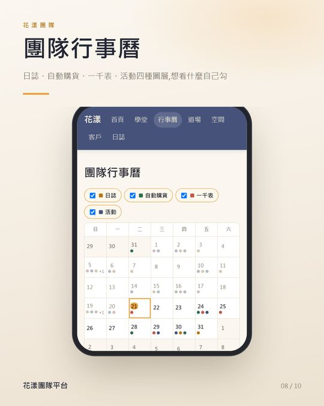
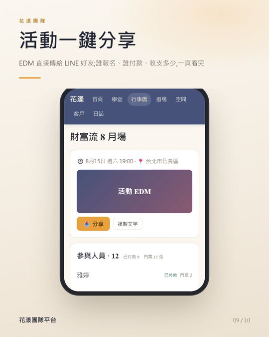
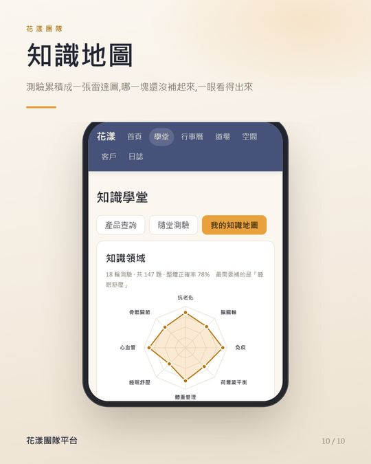
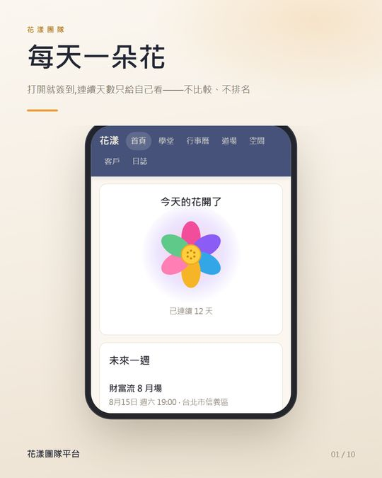
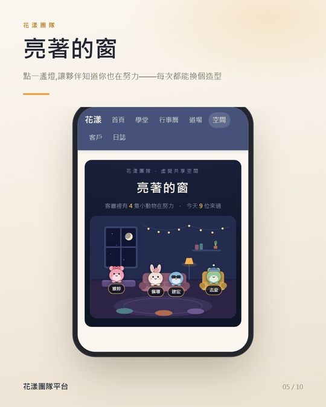
← 左右滑動看更多畫面 →
More works
從一次性的小工具到每天自動跑的流程，每個都是為了「少做一件重複的事」。
用程式產出 9:16 直式短影音：課程招生宣傳片、產品成分知識系列。配樂為原創合成，沒有版權疑慮；改文案、換產品只要重新輸出，適合需要大量素材的社群經營。
一套模板，系列內容快速量產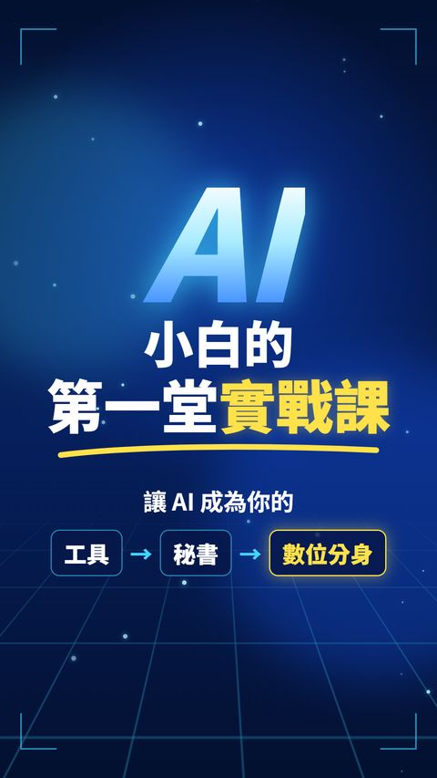
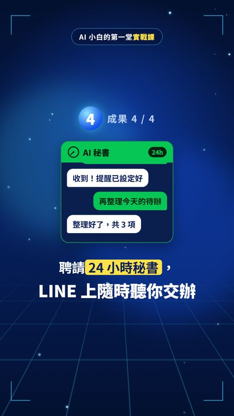
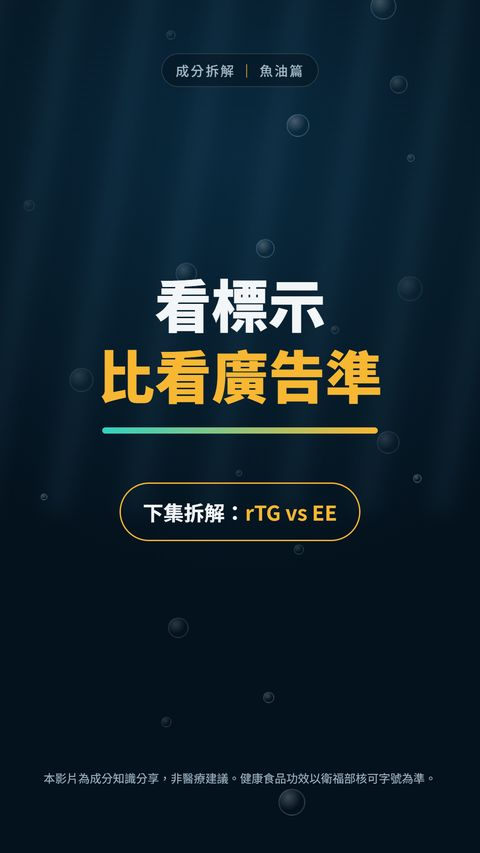
在 LINE 群組丟檔案，自動存進 Google Drive 並由 AI 建議分類；要找資料直接打「心血管保健」這樣的白話，回傳雲端連結。
資料不再沉在聊天紀錄裡一張生活照，產出商務形象照：去背、攝影棚背景、補光，或換上西裝的上半身照。臉部以原照為準，頭像模式全程在本機處理。
省下棚拍時間，照片仍然像本人每天自動抓取熱門關鍵字趨勢、機票價格、GitHub 爆紅 AI 專案，存成歷史紀錄、產出報表，有變化才推播到 LINE。
讓程式替你盯盤，有事才通知自動讀取會員後台報表，依規則篩出「快要失去資格、需要提醒」的名單並附判斷依據，取代每月逐列人工比對。
幾十分鐘的比對，縮短到一句指令把 18 份考古題 PDF 整理成 1,440 題線上測驗，可依科目、年度篩選，並分析出 127 組歷屆重複考題與高頻考點。
適合補習班、企業內訓、題庫數位化就是你正在看的這一頁，加上一套 LINE 可左右滑動的名片卡，一鍵轉傳給好友或群組，對方點開就能加好友、報名課程。
交換名片，順便完成第一次行銷Services
模型可以很多，入口只要一個。你只需要說清楚想省下哪些時間，工具怎麼選、怎麼接，交給我。
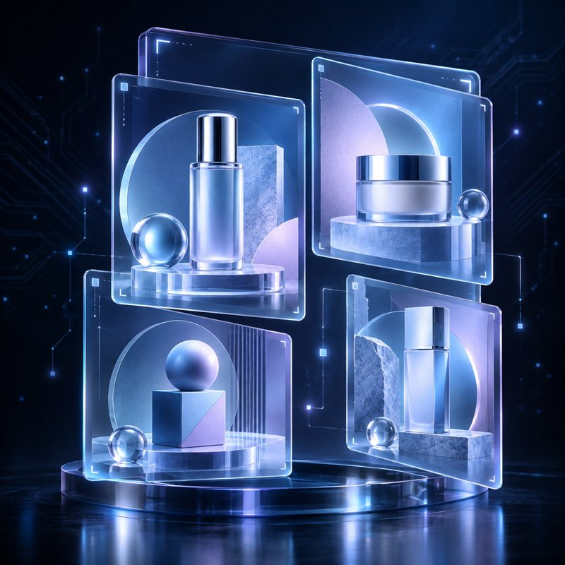
How we work
不需要一次投入大筆預算。先挑一個最花時間的流程，做出來、用看看，有感再往下做。
LINE 上聊聊你現在怎麼做、哪裡最花時間，我幫你判斷哪些適合交給 AI。
先做一個能實際操作的小版本，你和團隊試用，回饋再調整。
部署到雲端、接上 LINE 或既有系統，附使用說明，讓非技術同仁也能上手。
看實際使用狀況調整，有新需求再逐步加功能。
我的堅持：成本透明（能不用付費 AI 就不用）、資料安全（客戶資料權限分明）、功能要真的被用——做出來沒人用，就不算完成。
Let's talk
傳給我看看。告訴我你的流程，我會直接告訴你：哪些 AI 做得到、大概要怎麼做。
beta0805